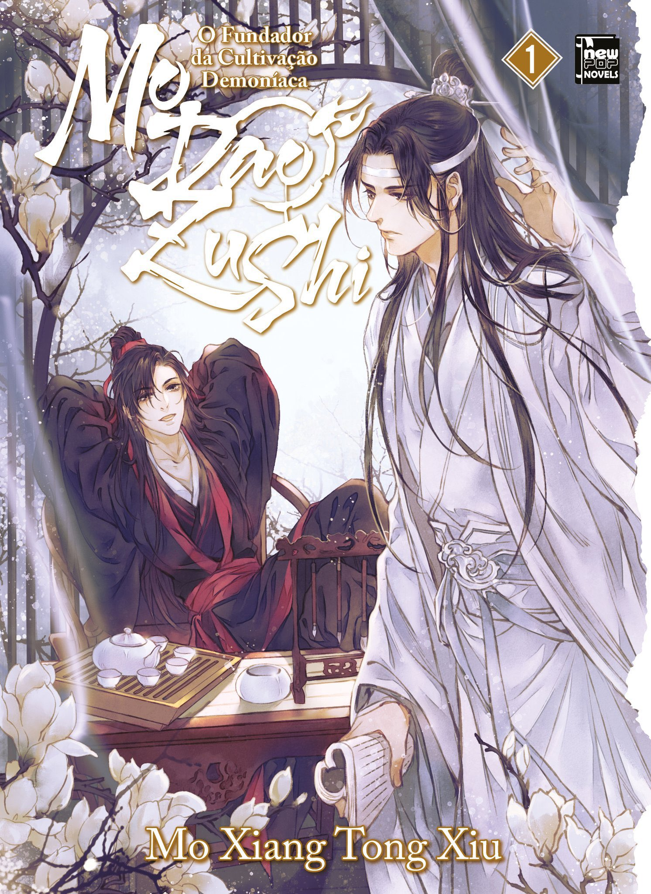
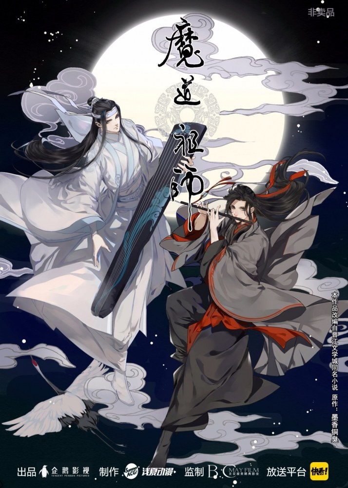
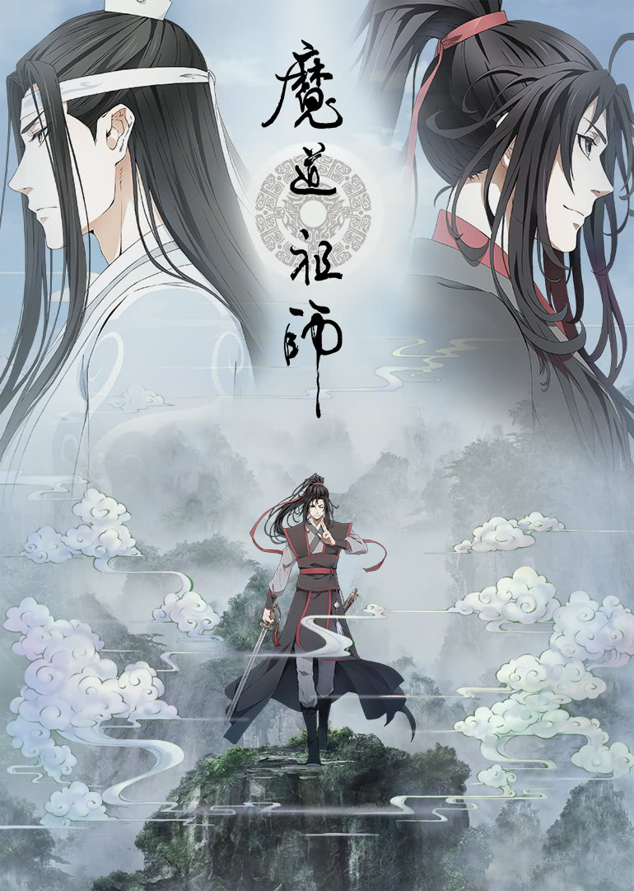

Novel - O Fundador da Cultivação Demoníaca

A novel de Mo Dao Zu Shi chegou ao Brasil através da Editora NewPOP com o nome de O Fundador da Cultivação Demoníaca. Terá um total de 4 volumes + Extra, e o primeiro está em pré-venda no site da Amazon, com seu lançamento previsto para junho de 2022.
Garanta já o seu!
Audiodrama - Mo Dao Zu Shi
O audiodrama de Mo Dao Zu Shi estreou em 2018, e é a adaptação mais fiel à novel. Está completa em 3 temporadas, e possui vários extras.
Playlist completa do Audiodrama Legendado em Português no Youtube
Manhua - Mo Dao Zu Shi

O manhua é a adaptação em quadrinhos de Mo Dao Zu Shi. Foi a primeira adaptação que a novel recebeu, tendo seu início em 2017, porém, ainda está em andamento.
Manhua em chinês (até o capítulo 229)
Manhua em inglês (até o capítulo 229)
Manhua em português (até o capítulo 130)
Donghua - Mo Dao Zu Shi

O Donghua é a animação de Mo Dao Zu Shi. Estreou em 2018 e conta com 35 episódios, distribuídos em 3 temporadas.
Donghua completo legendado em português
Donghua Chibi - Mo Dao Zu Shi Q

O Donghua Chibi é outra animação de Mo Dao Zu Shi, mas na versão chibi (um estilo de arte). A animação conta com 30 episódios.
Donghua Chibi completo legendado em português
Drama - Os Indomáveis
A adaptação mais famosa é o drama Os Indomáveis (Chen Qing Ling). O drama é completo em 50 episódios, e conta com a participação de atores como Xiao Zhan, Wang Yibo, Wang Zhuocheng, Liu Haikuan, entre outros.
Playlist do drama legendado em português no Youtube
Drama no catálogo da Netflix legendado em português